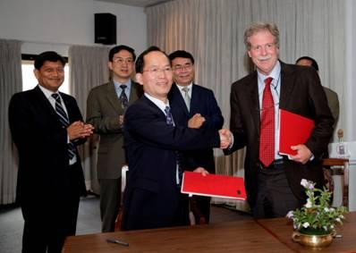

China
and Nepal on Monday signed several memorandums of understanding (MoUs) in the framework of the Third Pole
Environment program.The
Third Pole Environment (TPE) program, launched by the Chinese Academy of Sciences (CAS) in 2009, was
dedicated to the study of regions on the Tibetan Plateau; home to millions of people and thousands of
glaciers.
Prof.
Bai Chunli, president of CAS, and members of his delegation, visited Tribhuvan University (TU), the oldest
public university in Nepal, where a Third Pole Environment Center has been established.
"We
are willing to work together for the scientific and the technological development of Nepal," he
said.
The
Third Pole region has gained growing attention with its significant role in global atmospheric circulation
and its sensitivity for providing a first indication in climate changes. Therefore it is vital for a better
understanding of global climate and environment changes and their impacts on and interactions to human
activities, experts noted.
During
the visit, the university's relevant departments signed MoUs with corresponding institutes of CAS. Hydrology
and Meteorology and the Institute of the Tibetan Plateau Research under CAS.
Vice-chancellor
Prof. Hira Bahadur Maharjan of the university, said the scientific communities of the two countries should
make the best use of Nepal's unique biodiversity, land and climate variations.
The
Chinese delegation also visited the International Center for Integrated Mountain Development (ICIMOD) to
discuss ways to enhance cooperation between the two institutions.
ICIMOD
is a regional intergovernmental learning and knowledge sharing center serving the eight regional member
countries of the Hindu Kush Himalayan region Afghanistan, Bangladesh, Bhutan, China, India, Myanmar, Nepal
and Pakistan.
The
two sides signed a MoU on cooperation between CAS' TPE program and ICIMOD, aiming to help further scientific
understanding of climate change in the Hindu Kush Himalayas and bolster cooperation among countries in the
region.
ICIMOD
and CAS have been strategic partners for decades, working on areas of scientific research and knowledge
sharing for sustainable mountain development. (Xinhua)

Prof.
YAO Tandong signed agreement MOU with ICIMOD Director General Dr. David Molden (Image by ICIMOD)